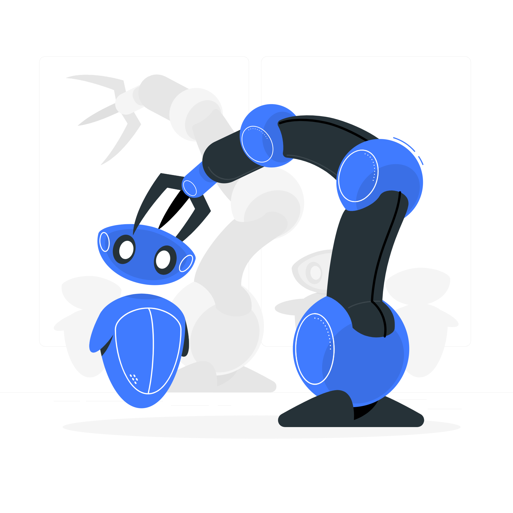

Sejam bem vindos a Robótica do Colégio Estadual Unidade Polo.
Com início em 2023, diversos projetos vêm sendo desenvolvidos com os alunos, tanto do regular, quanto nos projetos de contra-turno,
com objetivos de desenvolver diversas habilidades em nossos estudantes como:
- Liderança e Protagonismo
- Capacidade de resolução de problemas de forma sistemática
- Habilidades interpessoais
Além de incentivar a aprendizagem científica, por meio da criatividade, estimulando a experimentação de ideias, exploração de pesquisas e o
formando alunos criativos e criticos.
